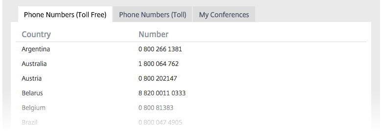

OpenVoice is easy-to-use audio conferencing. Check out some tips and tricks to improve your calls.
We find conferences on your phone’s calendar and display them so you can tap to join.
Join a conference frequently? Add it to your favorites for one-tap dialing.
Just have the conference ID? Enter it in and we’ll dial you into the call.
Have Outlook®? With the OpenVoice Outlook Plugin, you can schedule your OpenVoice conference calls directly from Outlook. No more searching around for conference info!
OpenVoice is more than just a phone number. The website gives you access to a suite of tools for your conferences.
Wondering who’s on the call? Sign in during a conference call to check caller ID, mute yourself or your attendees, and record a call with one click.
Customize OpenVoice to work for you.
When you’re the first participant, you’ll stay on hold until someone else arrives. You can change this in your settings.
Decide whether participants are announced with a beep, their name, or nothing when they join and leave a call.
Is your organizer PIN hard to remember? Change it to something more intuitive.
We offer phone numbers for over 50 countries. Check your phone numbers list for the countries your administrator has selected.
Start using the OpenVoice web app!
© 2015 Citrix Online Audio, LLC. All rights reserved.
Outlook and Windows are registered trademarks of Microsoft Corporation in the U.S. and other countries. Android is a trademark of Google Inc. iPhone is a trademark of Apple Inc., registered in the U.S. and other countries.